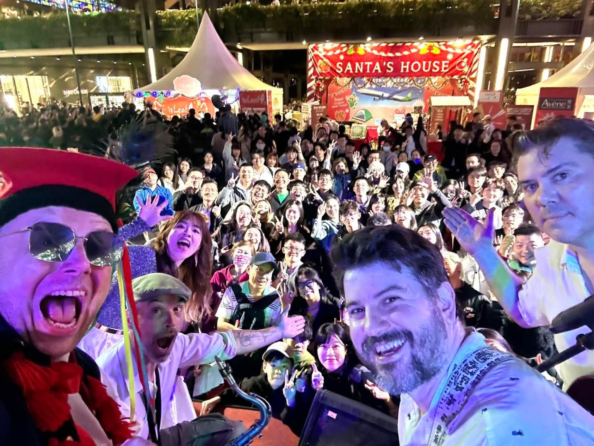
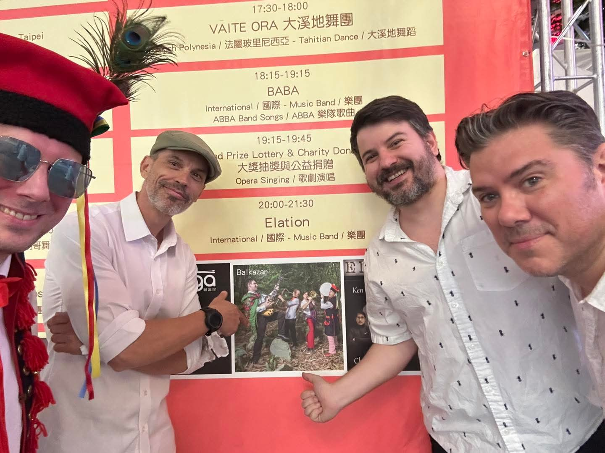

Last year at the Christmas Market
A photo with the crowd after the show.
Balkazar · Live in Taipei
We're back at the Christmas market on Thursday evening. Come dance with us.
Back at the Christmas market
We've played at the European Christmas Market almost every year, and we still look forward to it.
We see familiar faces in the crowd, along with people hearing us for the first time. Some stop to listen, some start dancing. It's a chance to share the Balkan music we love with people here in Taipei.
If you're around Xinyi on December 3, come by and say hello after the set.
Location: Xinyi Xiangti Avenue Plaza, next to the Shin Kong Mitsukoshi department-store area and near Taipei City Hall.
Festival contact: Association des Français de Taiwan (AFT) ↗

Last year at the Christmas Market
A photo with the crowd after the show.

A quick photo from last year
Getting ready for the show.
From another Christmas Market show
Dancing near the stage.
See you there
Come listen, dance, and say hello after the show.
Thursday, December 3 · 8:00–9:30 pm · Xiangti Avenue Plaza, Xinyi.